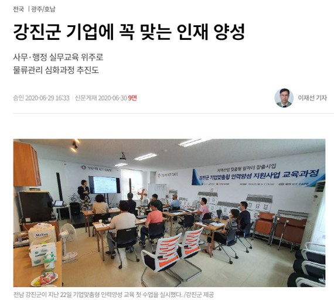

종료2020.01 – 2020.12사업 담당
지역산업맞춤형 일자리창출 지원사업
강진 기업이 필요한 인력을 직접 키워 연결
고용노동부 국비 7,000만 원 사업의 강진군 담당자로 일했습니다.
관내 기업 11곳과 협약을 맺고 직무 맞춤형 무료 교육을 운영해,
수료생에게 협약 기업 취업 기회를 연결했습니다.
- 사업비
- 7,000만 원
- 협약 기업
- 11곳
- 교육생
- 10명
- 관내 기업 11곳과 MOU를 맺어 교육 수료생 채용 연계 구조 마련
- 사무·행정 과정(한글·엑셀·회계 실무) 운영, 생산물류관리 과정 추가 추진
- 강진시장 ICT카페를 교육장으로 활용해 교육비 전액 무료 운영
- HRD-Net으로 훈련 과정 관리, e나라도움으로 국고보조금 집행·정산
고용노동부
국비 공모
기업 협약
인력양성 교육
HRD-Net
e나라도움
